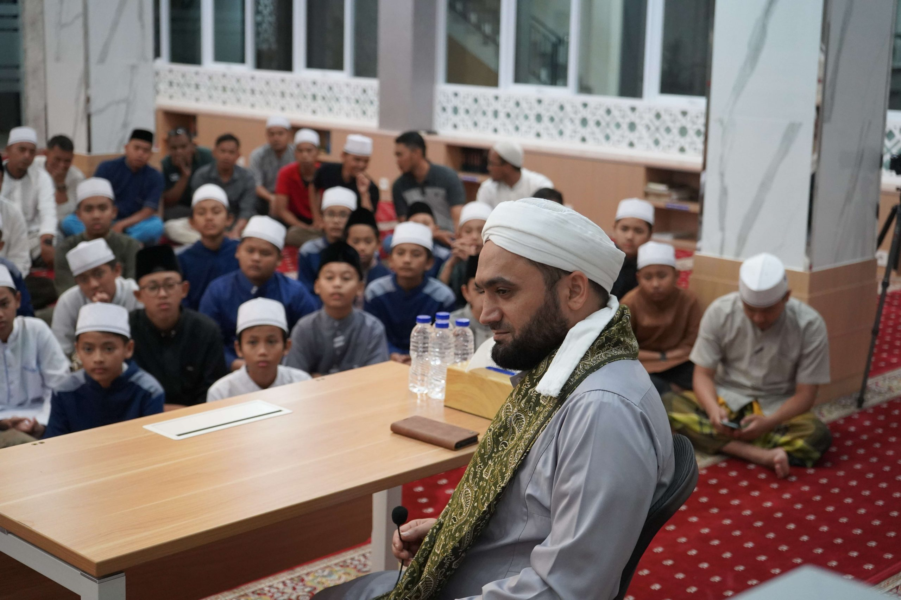

Foto Bersama Ust.Faisal
Pertemuan ini terjadi pada (12 Januari 2024) di (BQ CITY). Saat itu,
Ustadz Faisal baru saja selesai mengisi kajian agama di masjid
tersebut. Saya dan beberapa jamaah lainnya berkesempatan untuk
bersalaman dan berfoto bersama beliau.

Belajar Al-Qur'an Bersama Ust.Faisal
Bagi seorang Muslim, mempelajari Al-Quran adalah kewajiban sekaligus
jalan menuju kebahagiaan dunia dan akhirat. Begitu pula bagi saya,
yang bersyukur mendapat kesempatan untuk menimba ilmu melalui
majelis taklim "Cahaya Al-Quran" bersama Ustadz Faisal.

Kajian Bersama Ust.Faisal
Ustadz Faisal menyampaikan materi dengan sangat menarik dan mudah
dipahami. Beliau memberikan banyak contoh dan kisah inspiratif yang
membuat saya semakin termotivasi untuk mencari kebahagiaan sejati
dalam hidup.